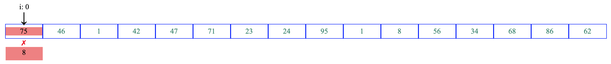
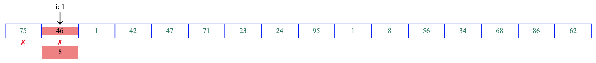
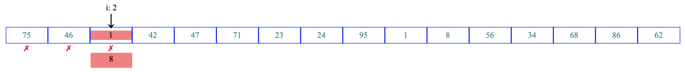
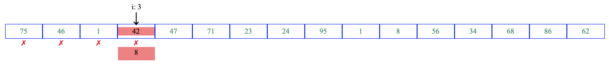
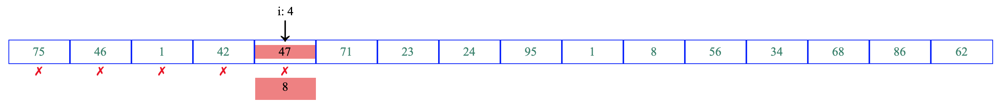
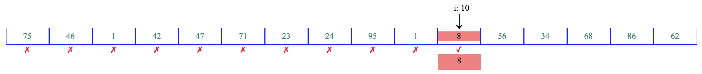
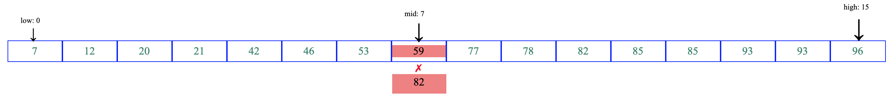
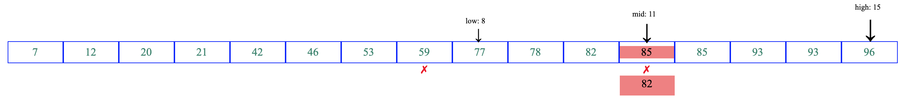
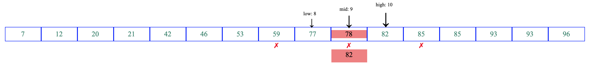
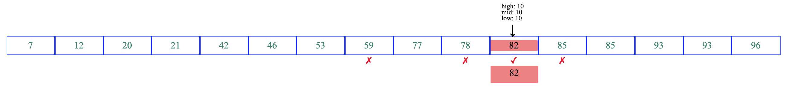

Linear search
Linear search or sequential search is a method for finding an element within a array. Starting with the value of zero-eth index, linear search mechanism sequentially checks each element of the array until a match is found or the whole array has been searched. For an array of size n, linear searching requires n comparisons in the worst case. The example below makes it amply clear. The target value, or the value to be searched, in this example is 8.
Step 1: 
Step 2: 
Step 3: 
Step 4: 
Step 5: 
Step 11 (skipping steps 6 through 10): 
A more detailed animation can be found HERE.
Generalized algorithm
Consider an array A of n elements with values or records A0 .... An−1, and target value L, the following algorithm performs linear search to find the index of the target L in A. Let i be the index.
Binary Search
Unlike the linear search algorithm above, binary search can only be performed on arrays that are sorted (typically ascending order). This technique capitalizes on the mathematical relationship (sorted) of values located at contiguous locations. Binary search works by repeatedly dividing in half the portion of the array that could contain the target value, until the possible locations are narrowed down to just one. In this example, the target value is 82.
Step 1: 
Step 2: 
Step 3: 
Step 4: 
A more detailed animation can be found HERE.
Generalized algorithm
Consider an array A of n elements with values or records A0 .... An−1, and target value T, the following algorithm performs binary search to find the index of the target T in A. Let i be the index. It must be noted that A is already sorted such that A0 ≤ A1 ≤ A2 ≤ A3 ≤ ⋅⋅⋅ ≤ An, i.e. sorted in ascending order.